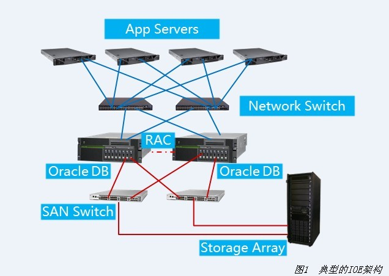
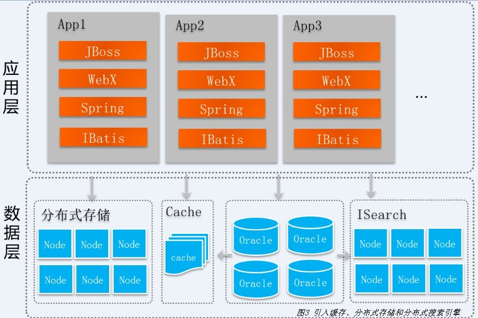
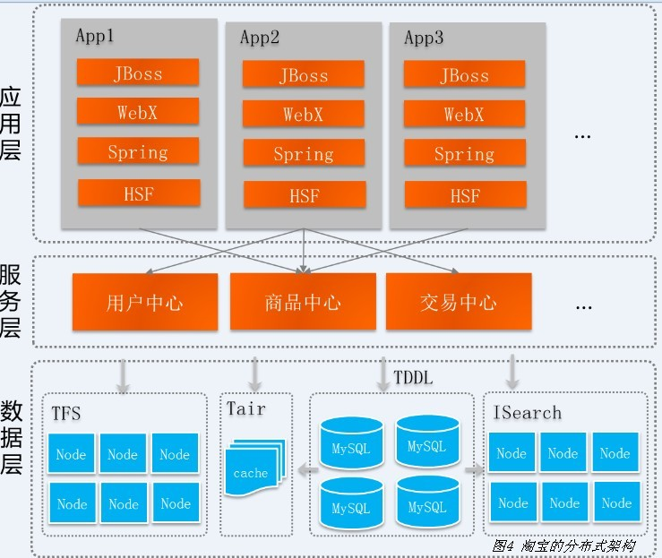
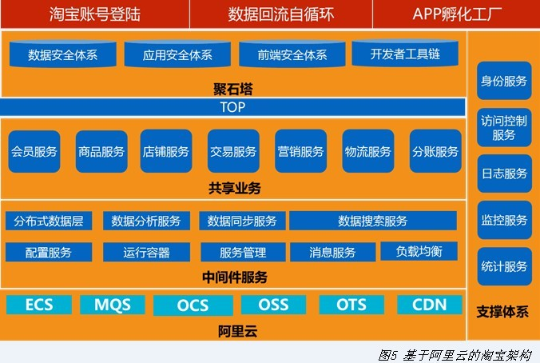
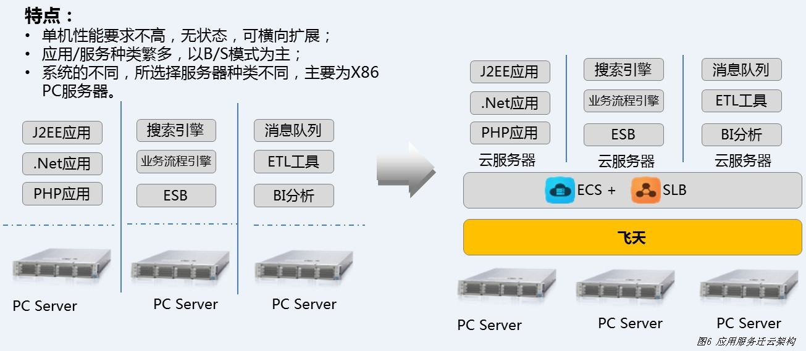
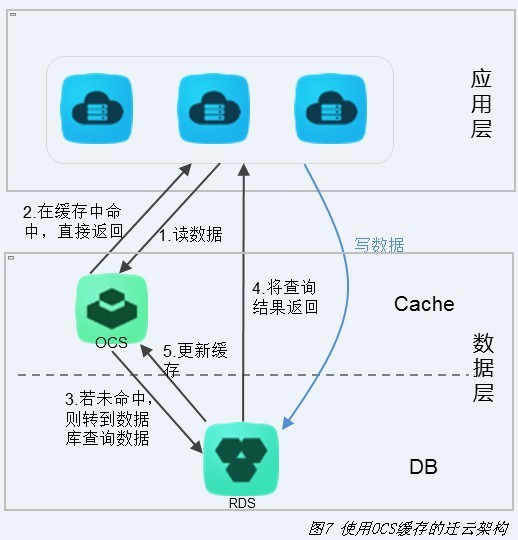
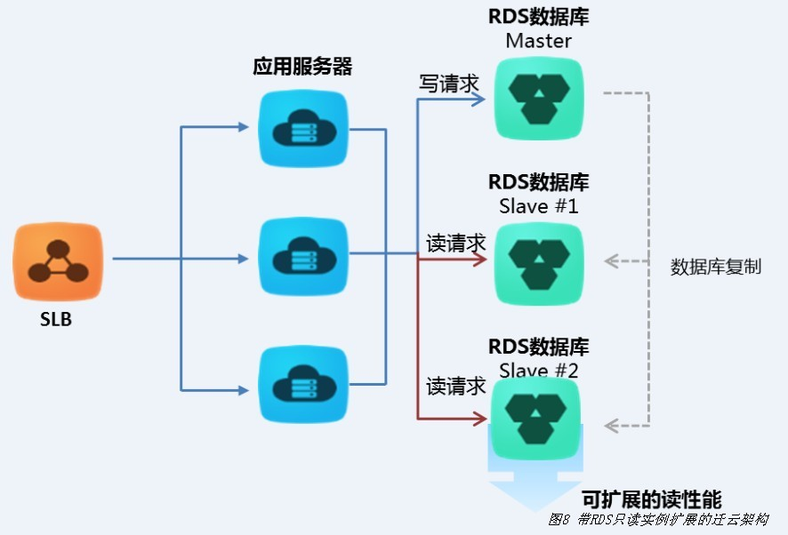
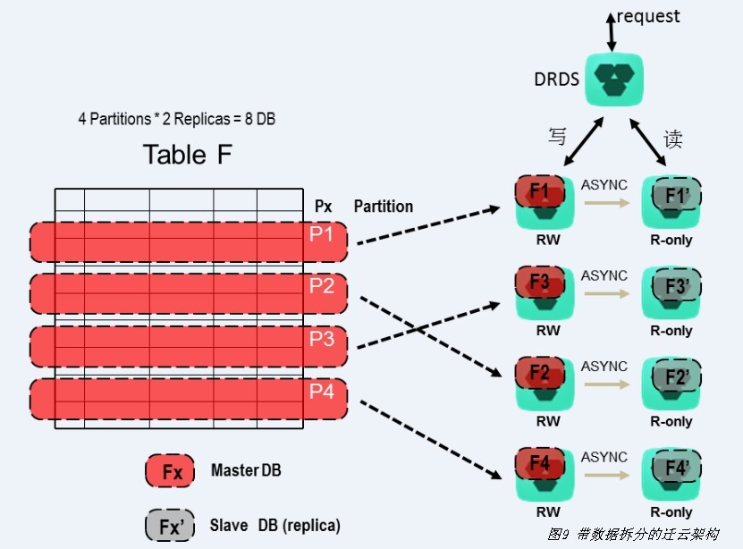
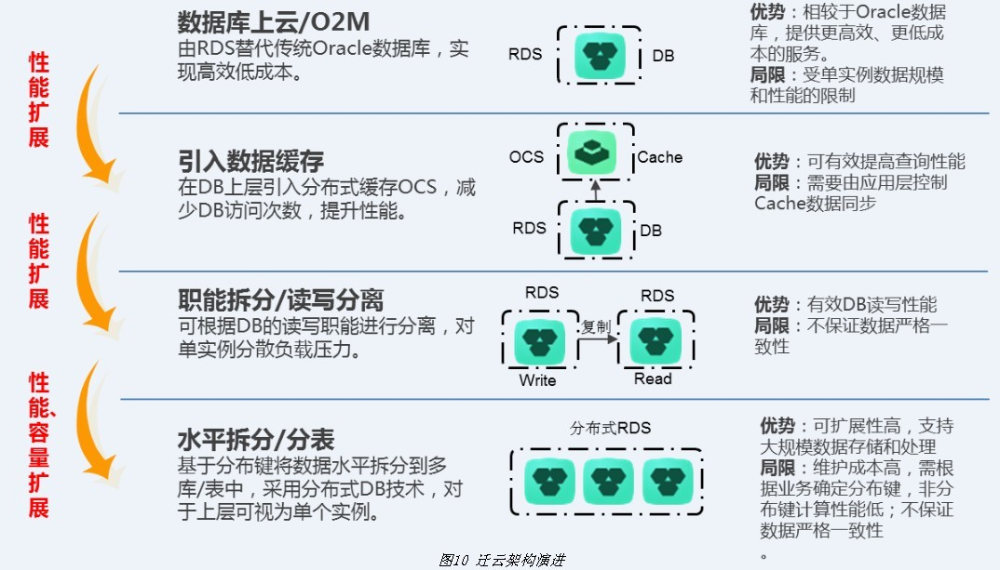
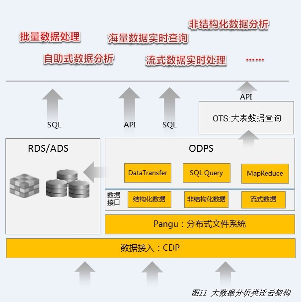

|
当前位置：凌云首页 > 技术专题
|
||||||||||||||||
|
迁云架构实践
Gartner的IT专家预测出了2015年的十大信息科技趋势，这些趋势被认为会在未来三年内对行业产生重大影响，其中之一就是“网络规模IT”，即越来越多的公司会建造类似亚马逊、Google和Facebook的应用和架构。这将使网络规模IT成为商用的硬件平台，使得新模式、云优化和软件定义方法成为主流。对于大部分企业级客户来说，可以结合自己的业务场景选择合适的技术架构来实现整体IT系统的互联网化设计。本文对IT互联网化带来的技术挑战与应对之道、迁云架构设计与实现进行了详解。
云计算作为信息技术领域的一种创新应用模式，自其诞生以来一直备受关注。由于其具备低成本、弹性、易用、高可靠性、按需服务等特点，近年来被看作是新一代信息技术变革和商业模式变革的核心。互联网、游戏、物联网等新兴行业纷纷积极拥抱云计算，对大部分企业用户来说，受限于传统IT技术架构的束缚，往往缺乏迁移到云计算的动力和技术实现参考。 传统IT架构的技术特点和面临的问题 企业中最核心的系统通常是数据库管理系统，用以满足实时交易和分析的需求。传统的单机数据库采用“向上扩展”（Scale-Up）思路但这种方式一般只能够支持几个TB 数据的存储和处理，远不能满足实际需求。 为了达到高性能和更大数据存储容量的要求，采用集群设计的OLTP系统逐步成为主流。如图1所示，常见的企业数据库集群如Oracle RAC通常采用Share-Everything（Share-Disk）模式。数据库服务器之间共享资源，例如磁盘、缓存等。当性能不能满足需求时，要依靠升级数据库服务器（一般采用小型机）的CPU、内存和磁盘，来达到提升单节点数据库服务性能的目的。另外，可以增加数据库服务器的节点数，依靠多节点并行和负载均衡来达到提升性能和系统整体可用性的效果。但当数据库服务器节点数量增大时，节点之间的通信将成为瓶颈，而且处理各个节点对数据的访问控制将受制于事务处理的一致性要求。从实际案例来看，4节点以上的RAC非常少见。  另外，根据摩尔定律，处理器的性能约每隔18个月便会增加一倍，而DRAM的性能大约每10年才会增加一倍，使得处理器和内存的性能形成剪刀差。虽然处理器的性能在快速提升，但由于磁盘的机械转速与磁臂的寻道时间的限制，磁盘存储性能提升缓慢，硬盘的IOPS性能近10年基本没有太大提升（HDD磁盘的转速一直在7200-15000RPM)，基于HDD的磁盘阵列存储越来越成为集中式存储架构的性能瓶颈，而全闪存阵列受限于高昂的成本和擦写寿命还远达不到大规模商用的要求。 因此，IOE的集中存储（Share-Everything）方式存在性能、容量与扩展性的局限，同时成本居高不下。而互联网化带来的高并发，大数据的处理要求，x86和开源数据库技术的飞速发展， NoSQL、Hadoop等分布式系统技术的逐渐成熟，互联网化带来的高并发、大数据的处理要求，使得系统架构开始从集中式的Scale-up架构向分布式的Scale-Out架构发展。 IT互联网化带来的技术挑战与应对之道 Gartner的IT专家预测出了2015年的十大信息科技趋势，这些趋势被认为会在未来三年对行业产生重大影响，其中之一就是“网络规模IT”，即越来越多的公司会建造类似亚马逊、Google和Facebook的应用和架构。这将使网络规模IT成为商用的硬件平台，使得新模式、云优化和软件定义方法成为主流。开发和操作的协同是向网络规模IT发展的第一步。但传统的IT系统在向互联网化方向转型时，通常需要面对以下几个技术挑战。 ■ 性能。用户体验是影响转化率的重要因素，据统计如果4秒钟打不开网站，将有60%的顾客会流失，糟糕体验将导致大量的客户选择放弃或从竞争对手处购买服务。如何在高并发访问的情况下保证系统的低延迟响应，以提升用户体验。 ■ 伸缩性。互联网/移动互联网用户的访问行为是动态的，在一些特殊的热点引爆后，流量能够通常达到平时的10倍甚至几十倍以上。如何快速响应业务爆发时的资源开销需求，提供无差别的用户体验。 ■ 容错与最大可用性。互联网应用系统基于分布式计算架构部署，基于大量的x86服务器和通用网络设备。而机器一定会坏，当机器数量到一定规模时，小概率事件就成为常态，当硬件出现故障时应该如何自动化处理，人一定会在开发中写出Bug，怎么进行系统的损害控制。如何基于单机QPS和并发数对服务端和客户端进行限流，实现动态流量分配，识别服务之间的依赖链路风险和系统重要功能点依赖，评估最大可能的风险点，分布式系统最大可用性故障检测，对故障模块进行隔离，对未完成事物进行Rollback，通过牺牲非关键功能通过优雅降级保证核心功能可用。 ■ 容量管理。系统性能一定会到达瓶颈，如何进行更科学的容量评估和扩容，自动计算前端请求与后端机器数量的对应关系，对软硬件容量需求进行预测。 ■ 服务化。如何将业务逻辑功能抽象成一个个原子服务，对服务进行封装和组合，并基于分布式系统环境部署，以实现更灵活的业务逻辑和流程。如何从业务视角厘清这些服务的关系，对大规模分布式系统中的单条服务调用链进行跟踪与展现，并能够及时发现服务调用异常。 ■ 低成本。随着系统的演进性能指标不断发生变化，如何保证以最低成本满足特定访问量的要求。 ■ 自动化运维管理。不断发展的大规模系统需要不断维护、快速迭代和优化。如何应对从一台到上千台甚至上万台服务器的运维量变，通过自动化工具和流程管理大规模软硬件集群，对系统进行快速部署、升级、扩容和维护。 随着业务的快速发展，淘宝技术架构经历从最初的LAMP架构，到IOE架构，再到分布式架构，最后到现在的云计算平台架构这一变化过程在不断解决上面的技术问题。 淘宝技术架构变迁 自2003年创立以来的，淘宝业务发展非常迅速，几乎是每年以100%的速度在成长。创立之初，为了快速上线，抢占市场，选择了当时流行的LAMP架构，用PHP作为网站开发语言， Linux作为操作系统，Apache作为Web服务器，MySQL为数据库，用了三个月不到的时间淘宝就上线了。当时整个网站应用服务器大概10台左右，MySQL数据库采用了读写分离、一主两备的部署方式。 2004年在淘宝业务发展的推动下，我们参考电信运营商、银行等的一些企业解决方案，将LAMP架构改造为Oracle+IBM小型机的数据库架构和EMC存储方式（图2）。虽然方案成本昂贵，但性能非常好。同时，随着网站流量的增加，系统显得有些不堪重负。当时最担心的问题是网站流量如果持续增加，交易量持续增加，网站的系统架构怎么设计？如何选择数据库？如何选择缓存？如何构建业务系统？……后来参考eBay的互联网设计架构，设计了一个Java的技术方案，并使用了非常多的Java开源产品。例如，选择当时比较流行的JBoss，作为应用服务器；选择一个开源的IOC容器Spring，来管理业务类；封装了一个数据库访问工具IBatis，作为数据库和Java类的Object-Reletionship映射工具。另外，对于商品搜索功能，采用自己开发的ISearch搜索引擎来取代在Oracle数据库中进行搜索，降低数据库服务器的压力。做法比较简单，每天晚上全量将Oracle小型机的数据dump出来，Build成ISearch的索引，当时商品量也不大，一台普通配置的服务器，基本上可以将所有的索引都放进去，没做切分，直接做了一个对等集群。
从2006年开始，淘宝为了改善用户体验，开始建立自己的CDN站点，由于淘宝的主要流量来源于各种商品图片、商品描述等静态数据，自建CDN可以使这些资源离用户更近，提升用户访问速度，改善用户浏览网站的体验。 2007年，淘宝全年的交易额超过400亿元，平均近1亿多一天，每天有100多万笔交易被创建。当时面对的几个主要问题是：一些系统的流量非常大，如商品详情等，如果直接访问数据库，会导致数据库压力非常大；如用户信息，访问一个页面，都需要查询买家信息、卖家信息、显示出买家的信用、卖家的服务星级等。此时，淘宝采用分布式缓存TDBM（Tair的前身）将这些热点静态数据缓存在内存中，提高访问性能。另外，将自己研发的分布式文件系统TFS部署在多台x86服务器上，取代商业的NAS存储设备来存储淘宝的各种文件信息，如商品图片、商品描述信息、交易快照信息，来达到降低成本和提高整体系统的容量和性能的目的，同时可以实现更灵活的扩展性。第一期上线大概200台TFS服务器。另外，将ISearch搜索引擎改为分布式架构，支持水平扩展，部署了48个节点。图3展示了这一架构思路。  2008年初，为了解决Oracle数据库集中式架构的瓶颈问题（连接数限制、I/O性能），将系统进行了拆分，按照用户域、商品域、交易域、店铺域等业务领域进行拆分，建立了20多个业务中心，如商品中心、用户中心、交易中心等。所有有用户访问需求的系统，必须使用业务中心提供的远程接口来访问，不能够直接访问底层的MySQL数据库，通过HSF这种远程通信方式来调用业务中心的服务接口，业务系统之间则通过Notify消息中间件异步方式完成调用。图4是淘宝的分布式架构图。  从2010年开始，淘宝网重点着眼于统一架构体系，从整体系统层面考虑开发效率、运维标准化、高性能、高可扩展性、高可用、低成本方面的要求，底层的基础架构统一采用了阿里云计算平台（图5），使用了SLB、ECS、RDS、OSS、ONS、CDN等阿里云计算服务，并通过阿里云服务提供的高可用特性，实现双机房容灾和异地机房单元化部署，为淘宝业务提供稳定、高效和易于维护的基础架构支撑。  在从IOE架构最终向云计算平台技术架构转移的过程中，主要面临以下几个技术挑战。 ■ 可用性：脱离小型机和高端存储的高冗余机制，采用基于PC服务器的分布式架构的云计算平台能否做到高可用。 ■ 一致性：Oracle基于RAC和共享存储实现的物理级别一致性，基于RDS for MySQL能否达到同样的效果。 ■ 高性能：高端存储的I/O能力很强，基于PC服务器的RDS能否提供同样甚至更高的I/O处理能力，MySQL和Oracle对SQL的处理性能是否相同。 ■ 扩展性：业务逻辑如何拆分，如何服务化，数据分多少库分多少表，什么维度分，后期二次拆分如何更方便等。 基于阿里云计算平台，通过采用合适的技术策略和最佳实践，包括：应用无状态，有效使用缓存（浏览器缓存、反向代理缓存、页面缓存、局部页面缓存、对象缓存和读写分离），服务原子化，数据库分割，异步解决性能问题，最小化事物单元，适当放弃一致性。以及自动化监控/运维手段包括监控预警、配置统一管理，基础服务器监控，URL监控，网络监控，模块间调用监控，智能分析监控，综合故障管理平台，容量管理。可以很好地解决以上问题，从而达到整体系统的高可扩展性、更低的成本、更高的性能和可用性的实现效果。 迁云架构最佳实践 淘宝的技术架构是一个伴随业务逐渐发展而逐步演进的过程，中间沉淀了很多宝贵的架构最佳实践。对于大部分企业级客户来说，可以结合自己的业务场景选择合适的技术架构来实现整体IT系统的互联网化设计。不同应用场景下的迁云架构，包括文件存储、应用服务、OLTP数据库、OLAP数据库。 对于文件存储方式，可以直接用OSS取代EMC存储实现海量数据文件的存储，OSS存储最大容量可以达40PB，同时由于OSS是分布式存储方式，可以通过多个节点的并行读写显著提高数据访问性能。对于大文件，还可以通过Multipart Upload的方式，将大文件分块并行传输与存储，实现高性能。 对于应用服务，可通过SLB+多台ECS实例组合取代IBM小型机（图6），也可以根据不同应用类型，直接基于ACE、ONS、OpenSearch等阿里云中间件云服务部署。  OLTP应用的迁移相对复杂。目前阿里云的RDS实例最高是48GB内存，14000IOPS，1TB的存储容量（SSD存储），支持MySQL和SQL Server。这个配置作为单数据库服务器来使用可以满足很多场景的数据库应用需求，可直接取代大部分场景下的IBM小型机+Oracle数据库+EMC存储。 对于性能要求更高的应用，可考虑引入开放缓存服务OCS，将部分查询数据加载至分布式缓存中，减少RDS的数据查询次数，提升系统的数据查询并发效率和降低响应时间，如图7所示。  对于读的请求远大于写请求的场景，可以考虑用多个RDS数据库，采用分布式方式实现读写分离，写交易主要发生在主库，读请求访问备库，可以根据需求对读库进行扩展，以实现整体请求性能的提升。图8是带只读实例扩展的迁云架构。  对于数据规模较大的数据库表，可以通过水平切分的方式，将数据分布在多个RDS实例上，通过并行的分布式数据库操作来实现性能和容量的提升。图9是带数据拆分的迁云架构。  总的来说，通过迁移到RDS、引入数据缓存、分库分表、读写分离等多种方式可以用Scale-Out方式取代原有的IOE架构，并且获得更好的性能和扩展性。图10中是迁云架构演进过程。  对于OLAP应用，可采用ODPS+OTS+RDS/ADS的解决方案取代小型机+Oracle DB+OLAP+RAC+EMC存储解决方案，如图11所示。总体来看，迁云的通用架构方案如图12所示，针对具体业务系统的迁云方案还需要根据实际情况进行分析和合理选择。 
总结 通过采用不同的迁云架构实现方案，用户可以根据不同的实现场景要求，将传统的IT系统迁移到云端。通过云产品架构最佳实践，使阿里云产品组合发挥最大效用，让用户充分享受云计算带来的弹性、低成本、稳定、安全和易用等价值收益。
|
||||||||||||||||
| 阿里云来往 关注阿里云 |
| 阿里云微博 关注阿里云 |
| 阿里云微信 关注阿里云 |